Introducción
En el mundo actual altamente competitivo, la eficiencia y flexibilidad de los procesos es esencial para mejorar el nivel de calidad de aquel atributo que nos coloque en la posición adecuada para llevar a cabo nuestras metas profesionales y personales.
Plataforma ENARM, líder en la preparación para El Examen Nacional de Aspirantes a Residencias Médicas (ENARM) en México, reconoce la necesidad de aprovechar su vasta experiencia dentro de la preparación para este examen y decide focalizar sus esfuerzos en lo que compete a la mejora de su experiencia educativa.
Este caso de estudio profundiza en el viaje de Plataforma ENARM embarcándose en un proyecto para desarrollar un software de aprendizaje en línea. El objetivo principal del software era reducir el acompañamiento 1:1 entre personal de soporte al cliente y estudiantes, así como mejorar la eficiencia y eficacia general de la experiencia asíncrona a lo largo del proceso de aprendizaje. Al implementar un enfoque centrado en el usuario, Plataforma ENARM pretendía dotar a los estudiantes de su plataforma una guía para la autogestión de contenidos densos dentro de un marco de tiempo definido. La solución simplificaría sus tareas, mejoraría la experiencia de aprendizaje y disminuiría la tasa de contacto 1:1 con personal de soporte al cliente.
Descubriendo la Historia detrás del Proyecto
El proceso de diseño de la plataforma se enfoca en optimizar la experiencia de aprendizaje, mejorar la eficiencia y relevancia de los contenidos presentados bajo una situación en específica, y agilizar la comunicación entre los actores involucrados. Cada uno de estos aspectos fueron meticulosamente considerados para alinear los requerimientos específicos de Plataforma ENARM.
Conocer al cliente, primer paso
Plataforma ENARM es una compañía que ofrece el curso online más completo de entrenamiento para aprobar con éxito el examen ENARM. El equipo está integrado por más de 20 médicos especialistas en casi todas las áreas de la medicina.
Plataforma ENARM cuenta con múltiples sistemas de aprendizaje, es decir, su contenido multimedia se adapta a las distintas preferencias de aprendizaje. Se cuenta con vídeo-clases, resúmenes, mini resúmenes, flash cards, cuadros comparativos, esquemas, tips, y más.
El porcentaje de aceptación de sus alumnos rebasan el 80%, de los cuales 8 de cada 10 acreditan su pase a la residencia desde el primer intento.
La compañía se enfrentaba a un reto de crecimiento el cual demandaba la actualización del sistema, así como sus flujos de trabajo, ya que contaban con un onboarding lento y lleno de fricciones. Cada vez que se incorporaba un estudiante a la experiencia de aprendizaje, se vivía una situación frustrante entre el equipo de soporte al cliente y el estudiante. Sin mencionar carencias técnicas como la versión móvil y la consulta offline de los recursos de aprendizaje.
La meta colectiva era desarrollar la Plataforma de Aprendizaje ENARM que pudiera evolucionar en una experiencia dinámica y flexible alineada tanto a los esfuerzos directivos existentes como a la visión a la que se pretende llegar.
Mi Proceso de Diseño
Abrazo y acepto el proceso de design thinking porque me permite crear soluciones que realmente resuenan en los usuarios. Siguiendo este enfoque iterativo y centrado en el ser humano, puedo empatizar con los usuarios, descubrir sus necesidades no satisfechas y definir el planteamiento del problema con claridad.
- Empatizar: Me sumerjo en la perspectiva del usuario, realizando investigaciones y entrevistas para obtener una visión profunda de sus necesidades, motivaciones y puntos débiles.
- Definir: Formulo los hallazgos de la investigación en un enunciado claro del problema que captura el desafío del usuario y establece una dirección enfocada para el proceso de diseño.
- Idear: Genero una amplia gama de ideas creativas sin juzgar, fomentando la lluvia de ideas y la colaboración para explorar posibles soluciones.
- Prototipar: Transformo las ideas en representaciones tangibles, construyendo prototipos de baja/alta fidelidad que permiten pruebas y refinamientos iterativos.
- Testear: Recopilo comentarios de los usuarios a través de pruebas de prototipos, observo sus interacciones e incorporo sus conocimientos para perfeccionar aún más los diseños.
- Iterar: Vuelvo repetidamente a los pasos anteriores, perfeccionando y mejorando el diseño en función de los comentarios y conocimientos de los usuarios.
- Implementar: Finalizo el diseño para la implementación, considerando la viabilidad técnica, la escalabilidad y la aceptación del usuario, y lo preparo para el lanzamiento.
- Evaluar: Evalúo el impacto y el éxito de la solución implementada, recopilando comentarios y datos para medir su efectividad e identificar áreas de mejora adicional.
El Proyecto de Plataforma ENARM
Este estudio de caso detalla cómo la aplicación ayudó al cliente a identificar y abordar de manera proactiva posibles brechas en la interacción vivida entre el estudiante y la plataforma, al mismo tiempo que mejoró la eficiencia y eficacia general de las operaciones de soporte al cliente.
Comenzamos identificando los problemas
Mi fase de investigación implicó hablar con los usuarios finales y las partes interesadas para identificar los puntos débiles y los desafíos que enfrentaban en su trabajo diario y con la plataforma. A continuación un pequeño resumen sobre algunas de las ideas clave que descubrí.
- Software obsoleto: Muchos empleados de soporte al cliente se sentían frustrados por el software obsoleto que utilizaban. Este sistema estaba estructurado bajo un sitio web de Wordpress, el cual era torpe y difícil de navegar.
- Mala experiencia de usuario: En consecuencia, muchos empleados y estudiantes descubrieron que el software existente tenía una mala UX. El diseño era a menudo confuso y contrario a la intuición.
- Se muestran demasiados elementos en la pantalla: Muchos estudiantes se sintieron abrumados por la cantidad de información que se les presentaba en una sola pantalla.
- Flujo principal desorganizado y sin contexto: Muchos estudiantes tenían que depender de hojas de cálculo o archivos PDF obsoletos para mantener registro de su avance en el proceso de aprendizaje.
Superar los desafíos del proyecto
Diseñar una aplicación de aprendizaje para los estudiantes, abordar con características y funcionalidades necesarias la situación con soporte al cliente, mientras se contemplan los requerimientos técnicos, fue una tarea compleja y desafiante. Enfrenté varios obstáculos a lo largo del proceso de diseño, que iban desde equilibrar las expectativas de las partes interesadas con las necesidades del usuario final hasta la integración con contenido y sistema existente.
- Equilibrar las expectativas de los agentes directivos y las necesidades del usuario final: Programé reuniones periódicas con las partes interesadas para comunicar mis decisiones de diseño y recopilar sus comentarios. También creé una base de datos con reseñas de usuarios que habían utilizado su plataforma para comunicar a las partes interesadas dónde se encontraban los puntos débiles de la experiencia.
- Simplificando flujos confusos: Creé múltiples versiones de la arquitectura de la información y las cotejé con pruebas con usuarios para ver cuál era la más efectiva.
- Integración con sistema y contenido existente: Colaboré estrechamente con el equipo de desarrollo para garantizar que la plataforma pudiera integrarse eficazmente al sistema.
- Cumplir plazos ajustados: Prioricé las funciones clave y trabajé en estrecha colaboración con el equipo de desarrollo para asegurarme de que pudieran entregar el código de manera rápida y eficiente.
Definir el público objetivo
Definir el público objetivo de una plataforma e-learning implica identificar los grupos de usuarios clave y comprender sus características, necesidades y objetivos. Así es como abordé la definición del público objetivo y el desarrollo de personas para este proyecto.
- Aportes de los agentes directivos: Colaboré con los agentes directivos, incluidos parte del personal médico y el personal de soporte al cliente, para recopilar sus conocimientos y perspectivas sobre los usuarios principales de la aplicación.
- Investigación de usuarios: Realicé métodos de investigación cualitativa, como entrevistas, grupos focales y observaciones digitales, para conocer el contexto de los estudiantes de este tipo de plataformas.
Creando user personas
La cantidad de personas creadas depende de la complejidad del panorama de usuarios y de los distintos grupos de usuarios identificados durante la fase de investigación. En este proyecto de plataforma e-learning, desarrollé tres personas que representan diferentes perfiles de interacción con la plataforma.
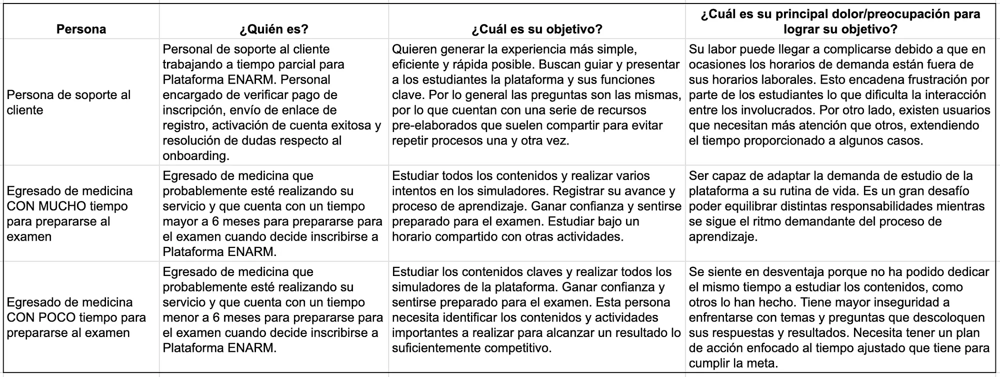
La importancia de la investigación de usuarios
La fase de investigación de usuarios jugó un papel fundamental en el desarrollo de la Plataforma ENARM. Comprender las necesidades, preferencias y puntos débiles de los estudiantes fue crucial para crear un diseño centrado en el usuario que mejorara su eficiencia y experiencia general.
Realizar investigaciones de usuarios y centrarse en la recopilación de datos
Llevé a cabo varios métodos de investigación cualitativa para recopilar información e informar el diseño de la lógica de los flujos de la plataforma.
- Encuestas: Se llevaron a cabo para recopilar comentarios sobre la experiencia utilizada actualmente.
- Observación Digital: Generé una base de datos a partir de reseñas compartidas en redes sociales sobre la experiencia de haber utilizado Plataforma ENARM y otras soluciones de la competencia.
- Grupos focales: Organicé un pequeño grupo focal con los integrantes de soporte al cliente. Como moderadora, guié las discusiones, permitiendo a los participantes expresar abiertamente sus experiencias, puntos débiles y sugerencias.
Construyendo una arquitectura de información adecuada
El éxito de nuestra plataforma de educación en línea que se adecúe a distintos ritmos de estudio depende en gran medida de una arquitectura de información bien diseñada que satisfaga las necesidades de nuestros usuarios finales.
Creación de arquitectura de información y flujo de usuarios
Para asegurarme de que la aplicación fuera intuitiva y fácil de usar, creé esquemas de arquitectura de información y flujos de usuarios. El esquema proporcionó una vista de alto nivel de toda la plataforma. Los flujos de usuarios desglosaron tareas e interacciones específicas de los usuarios, mostrando cómo los usuarios se moverían a través de la plataforma y lograrían sus objetivos.
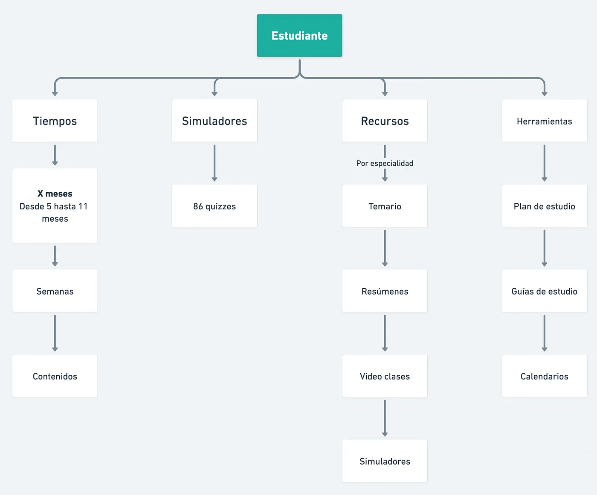
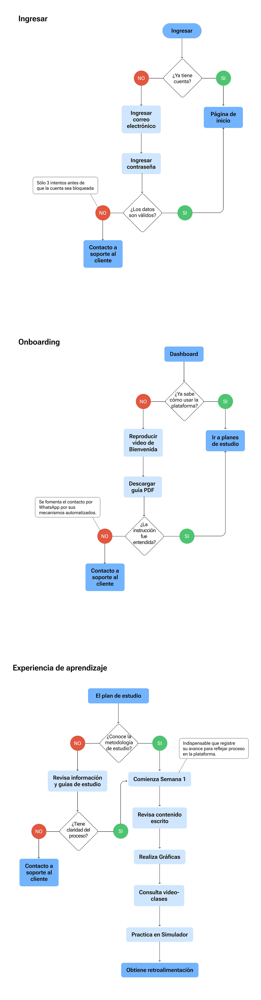
Sesión de lluvia de ideas y primeros bocetos
Una vez que tuve una lista definitiva de las funcionalidades clave y los flujos de usuarios, comencé a esbozar el diseño y la interfaz de usuario de la plataforma. Los bocetos eran dibujos rápidos y aproximados que capturaban el layout y la estructura básicos de la plataforma.
Después de algunas sesiones de lluvia de ideas internas con el líder de desarrollo, decidimos la estructura final de la plataforma, luego la discutimos con los agentes directivos y continuamos con los wireframes de alta fidelidad.
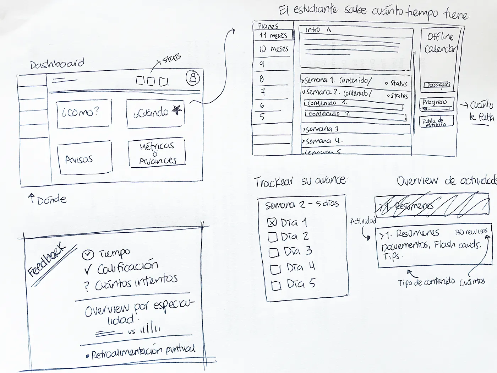
Preparando los wireframes
Una vez que tuve una comprensión clara del espacio problemático y las necesidades del usuario, comencé a esbozar diseños potenciales para la aplicación. Estos bocetos me ayudaron a explorar diferentes ideas y conceptos, y a obtener comentarios de las partes interesadas.
Ant Design como sistema de diseño
Para la realización de este proyecto se trabajó bajo el sistema de diseño Ant Design. Este Sistema de Diseño agilizó la implementación con el equipo de desarrollo gracias a sus bibliotecas de Componentes React UI de gran calidad. Además aceleró la etapa de ideación de los wireframes de alta fidelidad ya que se pudo experimentar con componentes existentes.
Los Prototipos
Una vez que tuve una idea aproximada del diseño, comencé a crear prototipos que mostraban el diseño y la estructura básica de cada pantalla. Estos wireframes me ayudaron a refinar aún más el diseño y obtener comentarios de los usuarios finales.
Los wireframes mostraban el diseño más detallado de cada pantalla, incluido el color, la tipografía y otros elementos visuales propios de la marca de Plataforma ENARM. El prototipo permitió a las partes interesadas y a los usuarios interactuar con la aplicación y probar el diseño en un entorno más realista.
Realización de sesiones de prueba de usuarios
Uno de los pasos más importantes en mi proceso de diseño fue la prueba de usuario. Sin embargo, debido a la naturaleza remota de mi trabajo, realizar sesiones de prueba de usuarios en persona no era una opción. En lugar de eso, tuve que idear una forma de realizar sesiones de prueba de usuarios remotos que generaran hallazgos y comentarios valiosos.
Para probar el prototipo con los usuarios finales, realicé sesiones de prueba individuales de usabilidad. Primero, recluté participantes para las sesiones de prueba de usuarios. Me comuniqué con estudiantes que estaban activos en la plataforma.
A continuación, creé un plan de prueba y un guión que describían las tareas que quería que completaran los usuarios y las preguntas que quería hacerles. Me aseguré de mantener las tareas y preguntas lo más objetivas y específicas posible para minimizar el sesgo en la retroalimentación.
Para realizar las sesiones, utilicé una combinación de software de videoconferencia y herramientas para compartir pantalla. Mientras los usuarios compartían pantalla, yo solicitaba que completaran las tareas, observaba y hacía preguntas.
Hallazgos
En general, si bien realizar sesiones de prueba de usuarios remotas presentó algunos desafíos, como dificultades técnicas y dificultad para leer el lenguaje corporal y las expresiones faciales, pude adaptarme y crear un proceso que arrojó información valiosa de los usuarios. Esto me permitió crear una plataforma de aprendizaje optimizada para las necesidades de los estudiantes así como para el personal de soporte al cliente.
El resultado de las pruebas proporcionó información valiosa y recomendaciones para futuras mejoras, que se incorporaron al diseño del producto final.
Diseño de producto final
Después de algunas iteraciones y rondas de comentarios, la plataforma finalmente estuvo lista para su lanzamiento. El producto final incluyó todas las características y funcionalidades descritas en la documentación y la hoja de ruta del producto, así como un diseño optimizado para los estudiantes y personal de soporte al cliente. La plataforma era fácil de usar e intuitiva, lo que facilitaba a los usuarios encontrar y gestionar el denso contenido bajo un tiempo determinado.
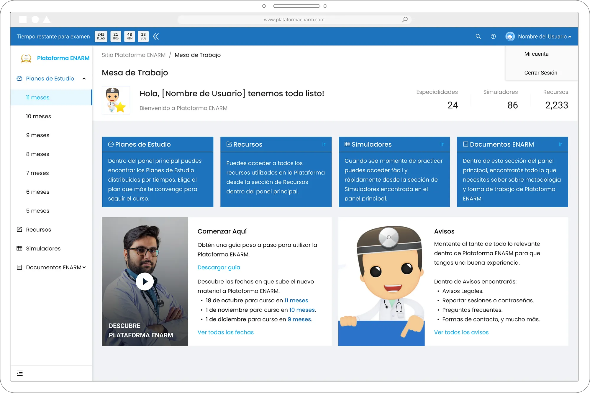
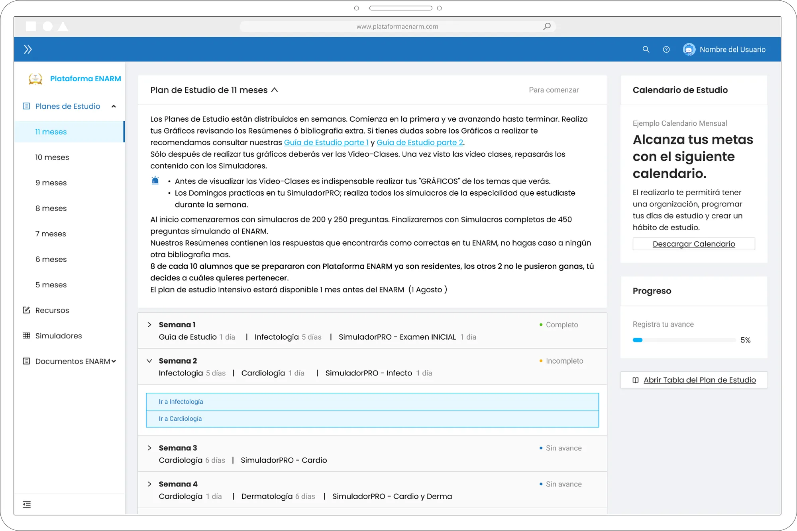
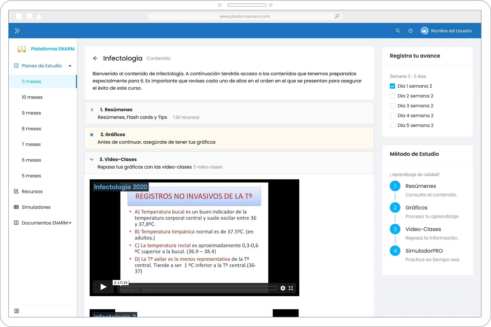
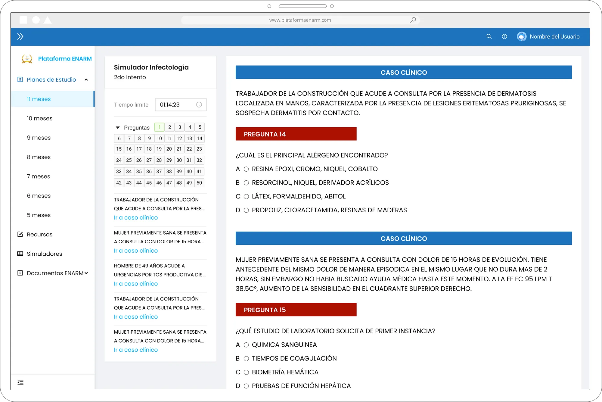
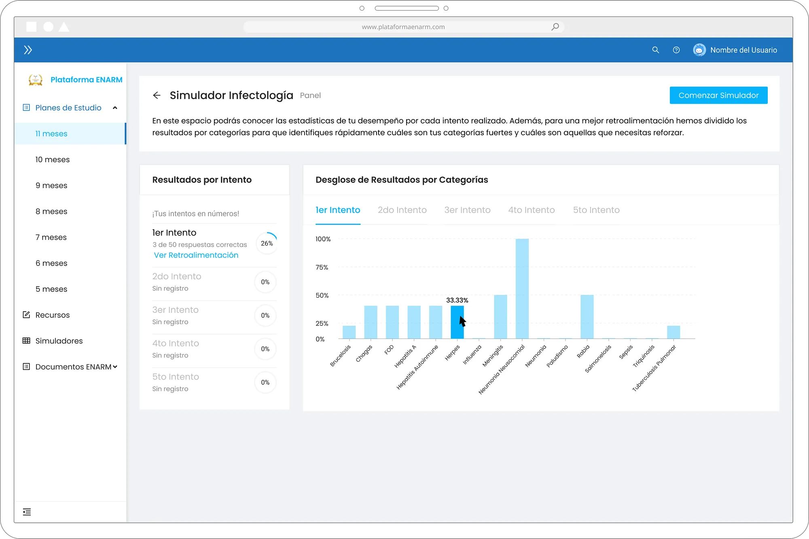
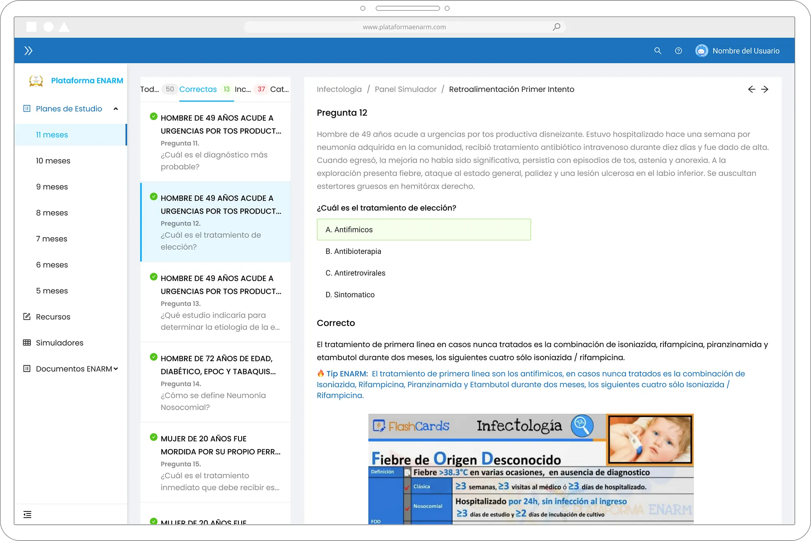
Registro de avance semiautomatizado
El registro de avance permite al usuario conocer cuál ha sido su avance en un marco de tiempo. También le brinda la posibilidad de hacer cálculos sencillos para adaptar y personalizar su ritmo de aprendizaje.
En el caso particular de este proyecto, se introdujo una funcionalidad de registro de avance que se adaptó a los requerimientos técnicos y alcances en cuestiones de tiempo y recursos. Este sistema de registro se propuso como semiautomatizado porque requiere que el estudiante ingrese como completado un campo de un módulo checklist que, a su vez, comunica al estado global de la aplicación qué contenido se ha revisado hasta ese momento y, por ende, el avance obtenido.
Esta funcionalidad permite a los usuarios refinar su ritmo de estudio, adaptarse a posibles interrupciones o variables en el marco del tiempo, y también proporciona una sensación de progreso para fomentar el compromiso de terminar la tarea completamente.
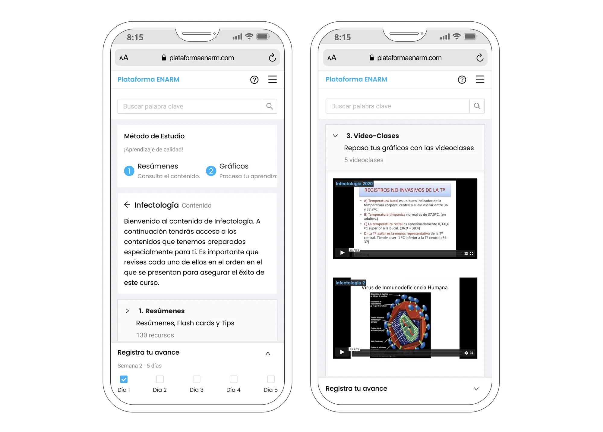
Simuladores y Retroalimentación
Los simuladores permiten a los estudiantes tener una experiencia más cercana a la realidad de lo que vivirán al momento de realizar el examen ENARM. Las cualidades de este examen consisten en responder correctamente el mayor número de preguntas posibles bajo un tiempo estipulado. Los estudiantes, por ende, se encuentran trabajando bajo presión por lo que entre más se familiarice con simulaciones al hecho, más le será sencillo afrontar esta experiencia exitosamente.
Este proyecto contaba con un gran número de simuladores que, aunque en términos de contenido estaban bien estructurados, sí se trabajó en la optimización de las interacciones y en su interfaz, para que fuera más intuitiva y semejante a la experiencia real.
Cada simulador, y cada intento del estudiante en el simulador genera una retroalimentación. Aquí se propuso una funcionalidad de registro y digestión de intentos para que el estudiante pudiera comparar los resultados obtenidos a lo largo de sus intentos.
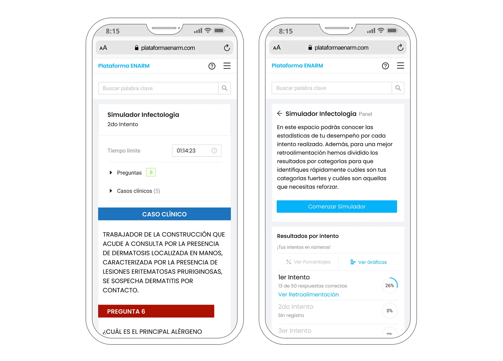
Midiendo el éxito
Medir el éxito de la implementación de la plataforma de aprendizaje ENARM implica evaluar indicadores clave de rendimiento (KPI) que reflejan el impacto de la aplicación en el proceso de aprendizaje, la productividad del personal de soporte al cliente, la satisfacción del estudiante y los resultados financieros.
Métricas clave
- Informe de mejora de la eficiencia: Disminución del tiempo promedio de procesamiento y menor tasa de demanda de los estudiantes para apropiarse de la experiencia de la plataforma (onboarding).
- Análisis de mejora de la productividad: Reducción de tiempo en finalización de casos, lo que indica que la plataforma facilitó una gestión de dudas más rápida y eficiente.
- Evaluación de la satisfacción del estudiante: Incluye datos de encuestas de comentarios del usuario y Net Promoter Score (NPS), que demuestran mejores experiencias y satisfacción general con el proceso de aprendizaje.
- Métricas de Evaluación de Impacto Financiero: Reducción de costos por parte del equipo de soporte al cliente, mostrando la eficacia de la plataforma para maximizar los resultados financieros al disminuir las tareas 1:1 y fomentar automatizaciones.
Pensamientos finales
Estos resultados validan la eficacia de la plataforma para lograr los objetivos del proyecto y destacan su contribución al éxito general de los distintos esfuerzos de esta plataforma de aprendizaje.
Me enorgullece confirmar que a partir de una inversión en la experiencia centrada en el usuario, se puede combatir un objetivo de negocio con éxito, en donde por medio de una buena experiencia de usuario distintos agentes pueden realizar sus tareas y alcanzar sus metas de una forma más amena, amigable y flexible.
⚠️ Spanish Version — English Available Upon Request
This case study is presented in Spanish, as it was originally developed for a Mexican client. However, an English version is available for international recruiters and teams.
📩 To request the English version, please contact me directly:
Contact me →